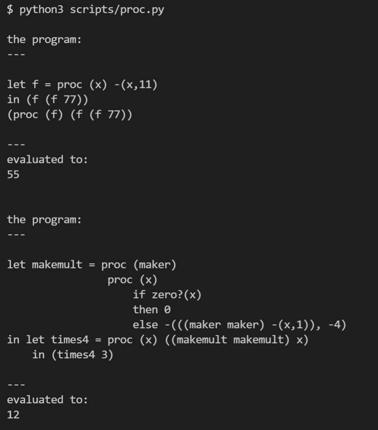

PROC: A Language with Procedures¶
代码：proc.py
PROC 语言增加了函数定义和函数调用两个表达式，语法如下：
1"""
2 syntax:
3 Program ::= Expression
4 a-program(exp1)
5
6 Expression ::= Number
7 const-exp(num)
8
9 Expression ::= - (Expression, Expression)
10 diff-exp(exp1, exp2)
11
12 Expression ::= zero? (Expression)
13 zero?-exp(exp1)
14
15 Expression ::= if Expression then Expression else Expression
16 if-exp(exp1, exp2, exp3)
17
18 Expression ::= Identifier
19 var-exp(var)
20
21 Expression ::= let Identifier = Expression in Expression
22 let-exp (var, exp1, body)
23
24 Expression ::= proc (Identifier) Expression
25 proc-exp (var, body)
26
27 Expression ::= (rator rand)
28 call-exp(rator rand)
29"""
值的类型增加了Proc，注意这个东西是first class的
ExpVal = Int+Bool+Proc
DenVal = Int+Bool+Proc
该语言的运行效果如下
mekemult 这部分代码是典型的利用Y combinator 在没有递归语法特性支持的语言 里面实现递归，这是 first class function 厉害的地方。
proc expression 在evaluate的时候会返回一个procedure对象，也就是闭包， 闭包是自带干粮（env）的，调用procedure的时候用的env是闭包自己的env。这里给用 Procedure 类来表示 procedure。
1class Procedure:
2 def __init__(self, var, body:Exp, env:Env):
3 self.var = var
4 self.body = body
5 self.env = env
ExpVal可以是procedure，这里给它增加一个variant
1class ProcVal(ExpVal):
2 def __init__(self, var, body:Exp, env:Env):
3 self.procedure = Procedure(var, body, env)
4
5 def to_proc(self):
6 return self.procedure
parser 增加一些处理逻辑
1 def parse_proc_exp(self):
2 self.require("PROC")
3 self.require("LEFT_P")
4 id_token = self.require("ID")
5 self.require("RIGHT_P")
6 exp = self.parse()
7 return ProcExp(id_token.value, exp)
8
9 def parse_call_exp(self):
10 self.require("LEFT_P")
11 rator_exp = self.parse()
12 rand_exp = self.parse()
13 self.require("RIGHT_P")
14 return CallExp(rator_exp, rand_exp)
evaluate的规则也很简单，ProcExp 不必说，evaluate CallExp 的时候使用的env是procedure的env再扩展形参后的env
1 if isinstance(exp, ProcExp):
2 return ProcVal(exp.var, exp.body, env)
3
4 if isinstance(exp, CallExp):
5 proc_val = evaluate(exp.rator, env)
6 procedure = proc_val.to_proc()
7
8 rand_val = evaluate(exp.rand, env)
9 return evaluate(procedure.body, ExtendEnv(procedure.var, rand_val, procedure.env))